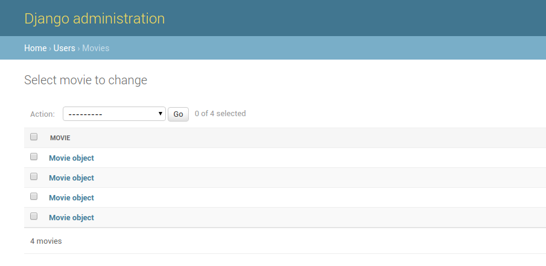
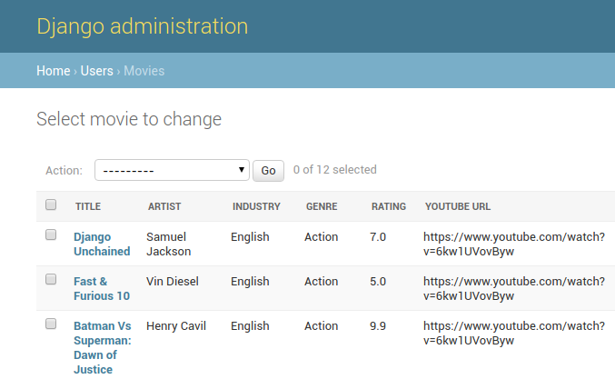

Django Tips & Tricks #9 - Auto Register Models In Admin
Inbuilt admin interface is one the most powerful & popular feature of Django. Once we create the models, we need to register them with admin, so that it can read metadata and populate interface for it.
If the django project has too many models or if it has a legacy database, then adding all those models to admin becomes a tedious task. To automate this process, we can programatically fetch all the models in the project and register them with admin.
from django.apps import apps models = apps.get_models() for model in models: admin.site.register(model)
This works well if we are just auto registering all the models. However if we try some customisations and try to register them in admin.py files in our apps, there will be conflicts as Django doesn't allow registering the same model twice.
So, we need to make sure this piece of code runs after all admin.py files are loaded and it should ignore models which are already registered. We can safely hook this code in appconfig.
from django.apps import apps, AppConfig from django.contrib import admin class CustomApp(AppConfig): name = 'foo' def ready(self): models = apps.get_models() for model in models: try: admin.site.register(model) except admin.sites.AlreadyRegistered: pass
Now all models will get registed automatically. If we go to a model page in admin, it will just show 1 column like this.

This is not informative for the users who want to see the data. We can create a ListAdminMixin, which will populate list_display with all the fields in the model. We can create a new admin class which will subclass ListAdminMixin & ModelAdmin. We can use this admin class when we are registering the model so that all the fields in the model will show up in the admin.
from django.apps import apps, AppConfig from django.contrib import admin class ListAdminMixin(object): def __init__(self, model, admin_site): self.list_display = [field.name for field in model._meta.fields if field.name != "id"] super(ListAdminMixin, self).__init__(model, admin_site) class CustomApp(AppConfig): name = 'foo' def ready(self): models = apps.get_models() for model in models: admin_class = type('AdminClass', (ListAdminMixin, admin.ModelAdmin), {}) try: admin.site.register(model, admin_class) except admin.sites.AlreadyRegistered: pass
Now whenever we create a new model or add a new field to an existing model, it will get reflected in the admin automatically.


Chillar Anand
A blog about python, careers & life.
To contact me, send a message here.